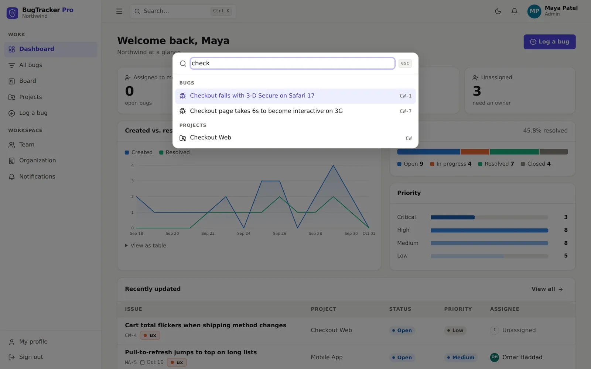
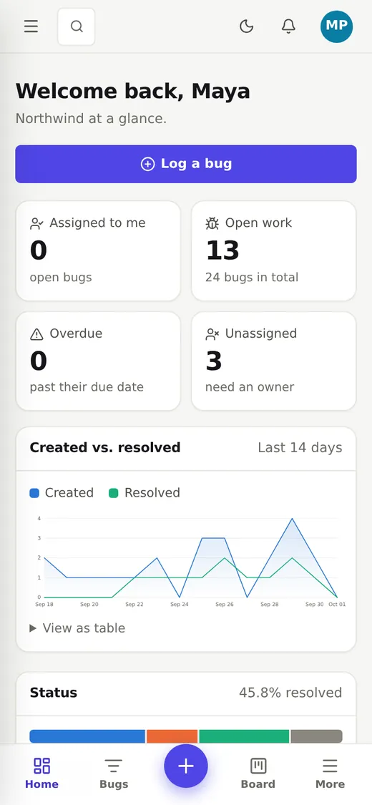
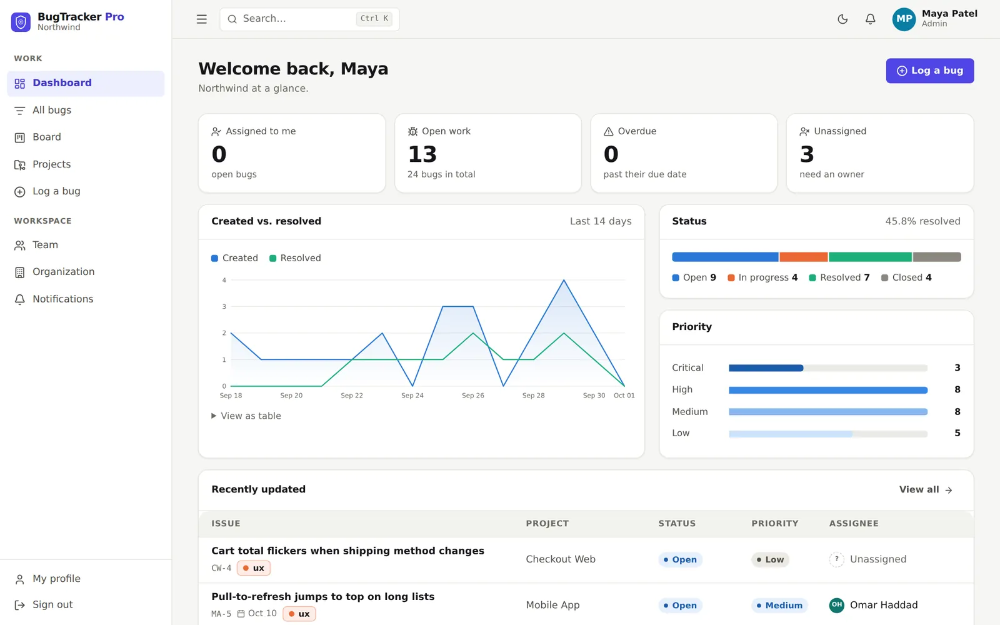
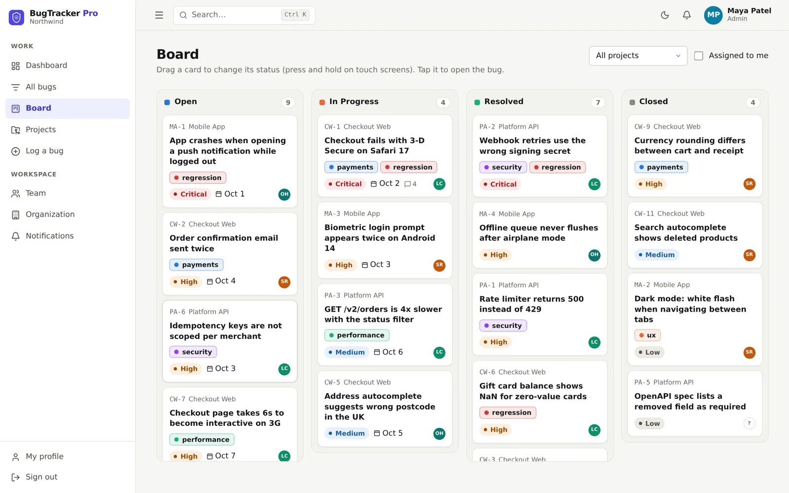
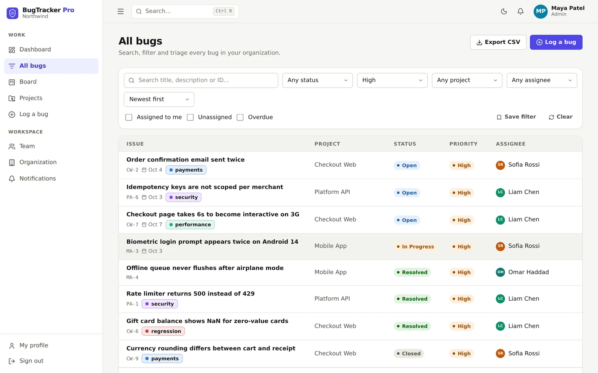
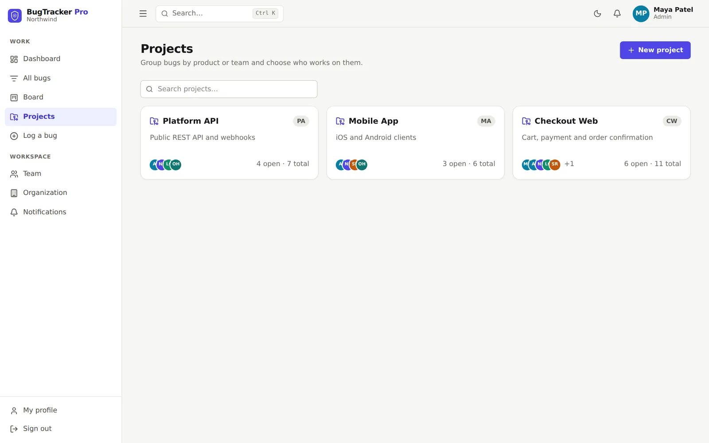
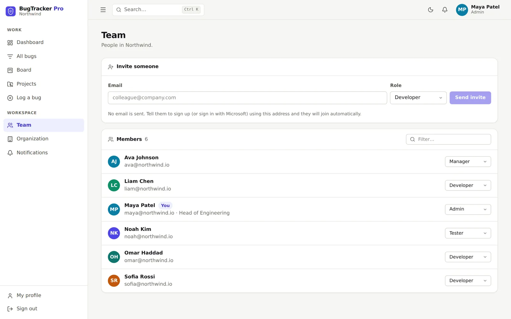
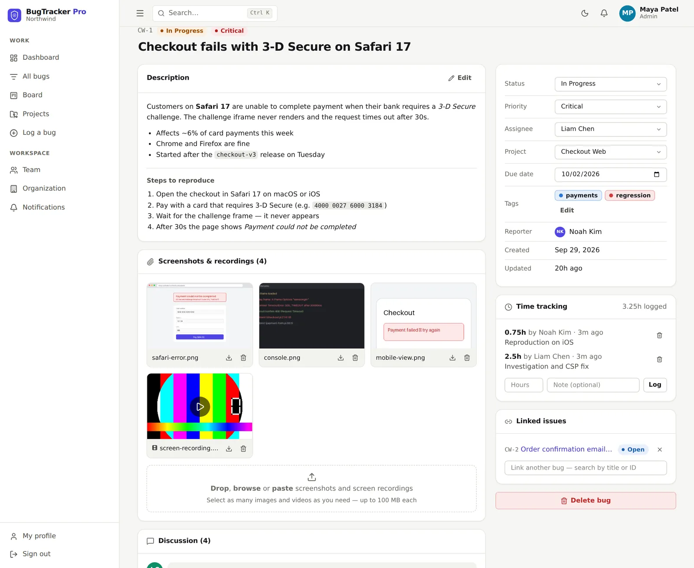
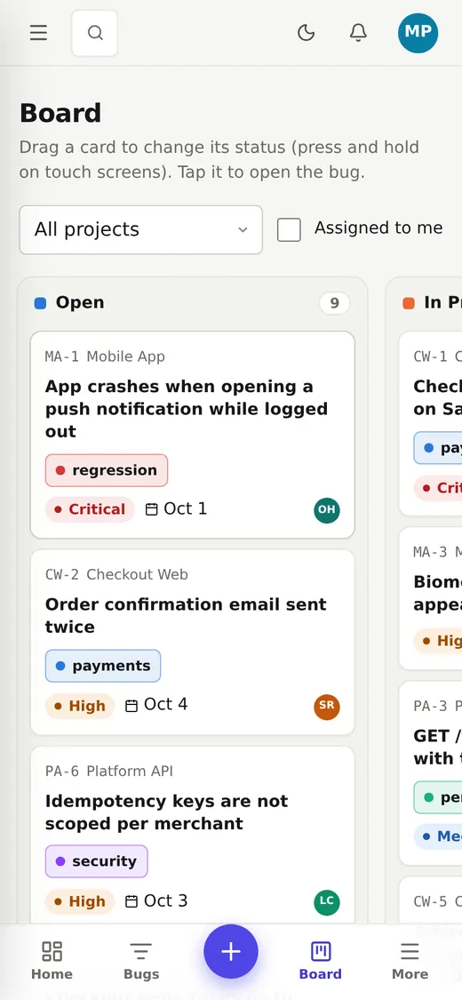
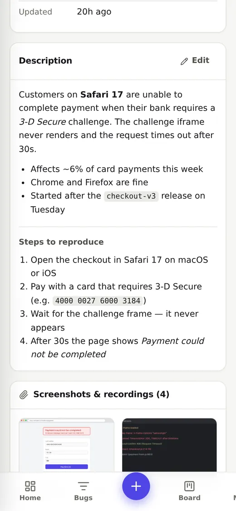

Command palette
Jump anywhere with Ctrl K
Search bugs by title or ID, projects and teammates from any page, then hit Enter. Keyboard first, mouse optional.

Real-time issue tracking
Log bugs with screenshots and screen recordings, hand them to the right person, and watch the board move — for your whole team, the moment it happens. On your desk and in your pocket.


The product
A focused tracker that covers the whole loop. Pick a view:
Know the state of play in five seconds. Open work, overdue and unassigned counts, created versus resolved over the last 14 days, and the status and priority mix — all live.
Move work with your hands. Drag cards between Open, In Progress, Resolved and Closed. Every move is logged, and the people involved are notified. Filter by project or just your own bugs.

Filter by anything, save it, export it. Status, priority, project, assignee, overdue, unassigned — synced to the URL so views are shareable. Save your favourite filters and export the result to CSV.

One home per product. Projects keep bugs organised with their own prefix (CW-1, MA-4…), members and open-bug counts. Developers only see the projects they belong to.

Bring your team in. Invite colleagues by email with a role, change roles in one click, and revoke invites. Everyone in the organization sees only that organization’s data.

Built for the way bugs actually move
Search bugs by title or ID, projects and teammates from any page, then hit Enter. Keyboard first, mouse optional.

Assignments, comments and status changes arrive over WebSockets. Notifications pop up instantly and the bell keeps count.
Due dates with overdue warnings, and time tracking on every bug so effort is visible, not guessed.
Connect duplicates and related bugs, search by title or ID, and jump between them in one click.
Markdown comments with replies and a live preview. Authors can edit or delete; the people on the bug are notified.
Every status, priority, assignee and due-date change is recorded with who and when.
Save the views you use every day and export any filtered list to CSV for reports and spreadsheets.
Rich bug reports
Attach as many screenshots and screen recordings as you need — drop them, browse for them, or paste straight from your clipboard.

On your phone
Not a squeezed desktop page — a layout designed for thumbs.


The workflow
Log it with markdown, repro steps and as many screenshots or recordings as it takes.
Set priority and a due date, tag it, link related bugs, and assign an owner.
Discuss in threads, log time, and drag the card forward. Everyone involved is told.
Close it with a full audit trail, and watch the overdue count fall.
For the whole team
Each organization is its own private workspace. Inside it, four roles keep the right people in control.
Questions
Invite them from the Team page with a role. When they sign up (or sign in with Microsoft) using the invited email address, they land in your workspace automatically. Colleagues on a company domain who weren’t invited are asked to request an invite.
Images, screen recordings, PDFs and logs — up to 100 MB per file, as many as you like. Drag them in, browse, or paste a screenshot from your clipboard.
Yes. The mobile layout has a bottom tab bar, a swipeable board, bottom-sheet dialogs and touch-sized controls. It follows your phone’s light or dark setting.
Yes. Every bug, project, tag and attachment belongs to one organization and is only visible to its members. Developers additionally see only the bugs assigned to or filed by them.
Yes — Microsoft sign-in is supported alongside email and password, including personal Microsoft accounts.
Any filtered list can be exported to CSV from the All bugs page.